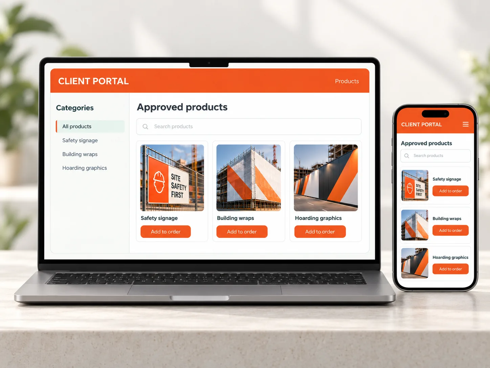

Good marketing.
Good business sense.
I believe great marketing builds more than brands. It understands customers, identifies opportunities and brings the right people together to turn ideas into growth.
Ideas worth
taking further.
A few examples showing how I approach opportunities, solve problems and transform strategic ideas into results.

Website redevelopment
A clearer digital experience, built around how customers research and buy.

Making ordering easier
A new purchasing concept designed to reduce friction and encourage repeat business.
MADE
CLEAR.
Turning technical into valuable
Helping customers understand complex solutions and why they matter.
Brands out in the real world
Connecting brand identity, physical environments and customer experience.
in the compared GA4 periods
in the compared GA4 periods
Curious by nature.
Commercial by instinct.
I'm Tiffany, a Marketing Manager and member of Sitemax's Senior Leadership Team. I lead the marketing function and contribute to business strategy and commercial decision-making.
I enjoy asking better questions, understanding what matters to customers and working with people to make good ideas happen. My experience spans brand and product marketing, digital, creative direction and go-to-market strategy.
Marketing leadership
I lead Sitemax’s marketing function as part of its Senior Leadership Team, connecting marketing priorities with wider business decisions. My work spans planning, creative direction, digital delivery and coordinating the people responsible for bringing projects to market.
Explore related workBusiness growth
I focus on making it easier for customers to find, understand and buy from the business. Website improvements have coincided with 334.7% growth in active users and 338.3% growth in new users between the reporting periods shown in my case study; the figures represent overall site performance, not solely my individual initiatives.
Explore related workBrand strategy
I developed BRANDuP around a clear commercial opportunity: construction sites shape perception long before project completion. By aligning hoarding, fencing, wraps and signage with a developer’s brand, the concept turns construction-stage presentation into a more consistent customer experience.
Explore related workProduct marketing
I translate technical product specifications, test evidence and compliance information into clear customer benefits. For scaffold containment, that has meant building practical product guides, value propositions and campaign materials around real on-site requirements.
Explore related workGo-to-market
I bring positioning, audience needs and sales materials into the same plan. From product launches to the SCAFF-26 exhibition, I build messaging and creative around what customers need to understand, what differentiates the offer and what the sales team can use.
Explore related workDigital marketing
I led the customer journey, content structure, SEO and AEO improvements for Sitemax’s website redevelopment, working with external developers to deliver the live experience. I also implemented website security and anti-spam measures to improve enquiry quality.
Explore related workAI adoption
I look for practical uses of AI that make marketing work more efficient while protecting accuracy and brand consistency. This includes exploring repeatable workflows and advocating clear templates, review steps and reliable source information for sales and marketing content.
Explore related workCreative direction
I connect the commercial brief with the finished execution, from campaign concepts and messaging to print, digital assets and large-format construction branding. I work with production partners and developers to make sure the result is both compelling and fit for purpose.
Explore related workStakeholder management
My projects often sit between marketing, sales, customer service, operations and external suppliers. I translate different requirements into shared briefs, practical decisions and a consistent customer-facing result, including the development of client-specific ordering portals.
Explore related workInterested in what we could build together?
I'm open to conversations about Marketing Manager and Head of Marketing opportunities where strategy, creativity and good people come together.